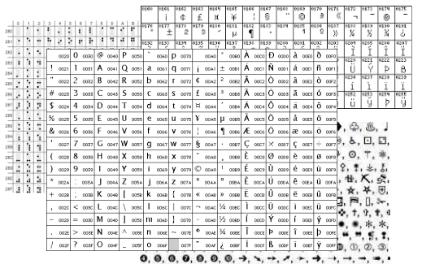

- Caracteres
Simplemente hacemos un mapeo entre los caracteres que queremos representar y un valor
numérico (entero)
Son dos los principales conjuntos de caracteres utilizados:
Una vez que tenemos el entero, a binario es trivial
- Ascii
Acrónimo para American Standard Code for Information Interchange
- 8 bits para representar cada caracter (solo 7 se usan)
- Funciona con la mayoria de los idiomas tradicionales (no hay ñ)
- Caracteres del 0-32 no se imprimen (de control)
- Diferente código para mayúsculas y minúsculas
- Números y letras en orden
- Ascii extendida
- ASCII
Ejemplo:
Este curso es fácil, solo hay que estudiar...
- Unicode
Claramente ASCII nos queda corto, a pesar de sus extensiones...
Unicode
- Representa un mayor número de idiomas (incluso lenguas muertas)
- Utiliza 16 bits para representar cada carácter...
- Un total de 65535 caracteres posibles
- Los primeros caracteres corresponden a los caracteres ASCII
- Utilizando ampliamente, por ejemplo Java, XML o el archivo fuente de esta
presentacion
- 3 fornas de codificación dependiendo del procesador:
